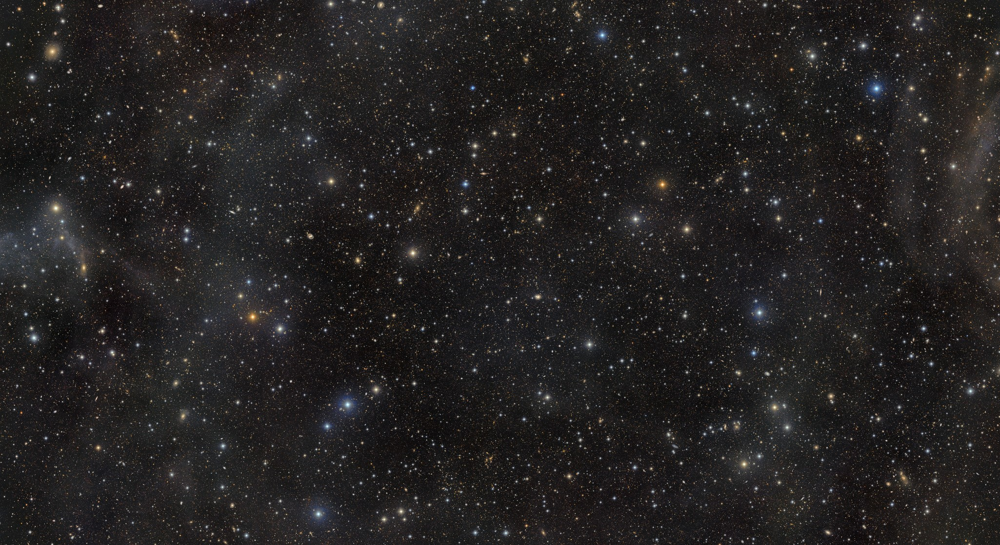

A LATAM Hack Days Workshop
Open Tools, Open Sky: Doing LSST Science with Public Rubin Data & LINCC Frameworks
Three days turning open access to Rubin's alert stream into working, broker-served science.
📌 Applications close September 8, 2026 — accepted participants announced shortly after.
About
Rubin Observatory's alert stream is the largest public astronomical data product ever released. Every alert packet, and every broker classification, is available to every astronomer — regardless of data-rights status. Yet without structured onboarding and the right tool guidance, that access remains opaque for many Latin American researchers.
Over three days in Medellín, students, early-career researchers, and senior LATAM scientists — working in teams paired with Rubin mentors — will build functioning science pipelines on broker-served Rubin alerts using LINCC Frameworks tools. The event follows the sprint-driven model of the Rubin Alerts & AI Hackathon: short context talks, pre-formed teams, daily stand-ups, and hack sprints punctuated by rapid team updates and a final show-and-tell.
Onboard a new LATAM cohort
Bring researchers to Rubin's public products (alert packets, brokers) and to LINCC Frameworks — LSDB/HATS, Hyrax, LightCurveLynx — with particular attention to those without individual LSST data rights.
Pair every team with a mentor
Each team is paired with a Rubin mentor committed to structured post-event follow-up — ensuring continuity into peer-reviewed publications and long-term collaborations.
Give back to the community
We will coordinate with Rubin's Community Science Team to include the lessons learned in documentation that will benefit the whole Rubin community.
Science Topics
Science topics are proposed by the mentors, and teams are assembled around them in advance. Every team uses at least one LINCC Frameworks tool and at least one community broker. Broad categories, drawn from the projects already proposed, include:
Transients & supernovae
Detecting and characterizing alert-stream transients, including Type Ia supernovae and their host galaxies.
Variable stars & the distance scale
Period-finding and population studies of broker-served variable stars, and distance determination across the nearby Universe.
AGN & alert classification
Characterizing AGN, transients and variable stars in the Rubin alert stream using community brokers such as ALeRCE.
Solar System
Exploring Rubin's Solar System discoveries and connecting them to the Minor Planet Center.
Anomaly detection
Discovering the unexpected — mining the alert stream for rare and anomalous events.

A Rubin deep field — the kind of public data this workshop builds on. Credit: NSF–DOE Vera C. Rubin Observatory.
Mentors & Projects
Rubin mentors lead pre-formed teams around the projects below. Each team pairs a mentor-proposed science question with hands-on Rubin alert data and LINCC Frameworks tools. Confirmed mentors, in alphabetical order by last name:
Pedro Bernardinelli ↗ Mentor
- Exploring Rubin Solar System discoveries in the Minor Planet Center.
Bolivia Cuevas-Otahola ↗ Mentor
- Mapping the Nearby Universe: distance determination with variable stars in the Rubin alert stream.
- Discovering the Unexpected: anomaly detection in Rubin alert streams.
Yijung Kang ↗ Mentor
- Matching host galaxies of SNe Ia using LSST alerts and archival catalog data.
Alejandra Muñoz Arancibia ↗ Mentor
- Characterizing transients, AGN and variable stars in Rubin alerts using the ALeRCE broker.
Rubin Data & LINCC Tools
The workshop is hands-on. A short set of plenary talks on Day 1 sets the context — the Rubin ecosystem, a broker crash course, and an Alert Production orientation — and everything else is building. Public datasets beyond Rubin (e.g. Gaia, Roman) broaden the science reach without requiring proprietary access; the LSDB/HATS formats are designed for efficient cross-matching.
- LSDB / HATS — scalable catalog cross-matching in the HATS format.
- Hyrax — machine-learning and anomaly-detection workflows on alerts.
- LightCurveLynx — light-curve modeling and analysis.
- Community brokers — e.g. ALeRCE; no data rights required to join.
- Rubin alert packets — the public alert stream, open to every astronomer.
- Companion surveys — Gaia, ZTF, ATLAS, Roman for cross-matching.
Pre-event (T–2 weeks): a ~2-hour self-paced tutorial covering LSDB/HATS, Hyrax and LightCurveLynx, plus a short kickoff Zoom with each team's mentor to set the science question and divide initial tasks.
Draft Agenda
Three full days in Medellín — context and sprints on Day 1, deep sprints and Science Collaboration pathways on Day 2, and a publication-pathway workshop with show-and-tell on Day 3.
Day 1 — Oct. 13
Context + Sprint 1
Day 2 — Oct. 14
Sprints + SC Pathways
Day 3 — Oct. 15
Sprint + Show-and-Tell
Draft schedule — subject to change. The event is scheduled after the early DP2 release window (RTN-011).
Local Information
The workshop is hosted by Universidad de Antioquia in Medellín, Colombia — the "City of Eternal Spring," set in a green Andean valley with a mild climate year-round and an easy international gateway via José María Córdova International Airport (MDE).
The event is fully in-person. Participants should bring a laptop; a UdeA computer room with desktops will be reserved as a backup for applicants without portable hardware.
The workshop will be conducted primarily in English.
Detailed venue, travel, and lodging information will be posted here as it is finalized.
Medellín, Colombia — host city for the workshop.
Participants
In selecting participants, we will prioritize, in order:
- Researchers and students from LATAM countries without Rubin data rights;
- Researchers and students in LATAM countries that have groups with data rights, but who are not themselves on that data-rights list;
- Other participants from LATAM.
The workshop is open to both early-career researchers and senior participants, with the goal of building mid- and longer-term collaborations and cohort building.
Please apply by September 8, 2026. Accepted participants will be announced shortly after.
Organizers
Principal Investigator: Andrés A. Plazas Malagón (SLAC National Accelerator Laboratory / KIPAC / Stanford University / Vera C. Rubin Observatory).
Co-Investigators
- Kristen Dage · Curtin University
- Camilo Delgado-Correal · U. Distrital Francisco José de Caldas
- Luz Ángela García · Universidad ECCI
- Alma González · Universidad de Guanajuato
- Juan Carlos Muñoz-Cuartas · Universidad de Antioquia
- Yasna Ordenes Briceño · Universidad Diego Portales
- Karla Peña Ramírez · Vera C. Rubin Observatory
- Luis Salazar Manzano · University of Michigan
- Mariano Domínguez · UN de Córdoba & U. de La Serena
- Tatiana Acero-Cuellar · University of Delaware
Code of Conduct
All participants are expected to follow the LINCC Frameworks Code of Conduct and the LSST-DA Code of Conduct throughout all workshop activities, online and offline.
- We pledge to treat all people with respect and provide a harassment- and bullying-free environment, regardless of personal attributes.
- We pledge to respect the work of others by recognizing acknowledgment and citation requests of original authors.
- We pledge to welcome questions and answer them respectfully, paying particular attention to those new to the community.
- We pledge to be conscientious of the perceptions of the wider community and to respond to criticism respectfully.
- We pledge to help the entire community follow the code of conduct and not remain silent when we see violations.
Contact
For questions about the workshop, please contact:
Andrés Plazas Malagón — plazas@stanford.edu
SLAC National Accelerator Laboratory / KIPAC / Stanford University / Vera C. Rubin Observatory
Juan Carlos Muñoz-Cuartas (local host) — juan.munozc@udea.edu.co
Universidad de Antioquia